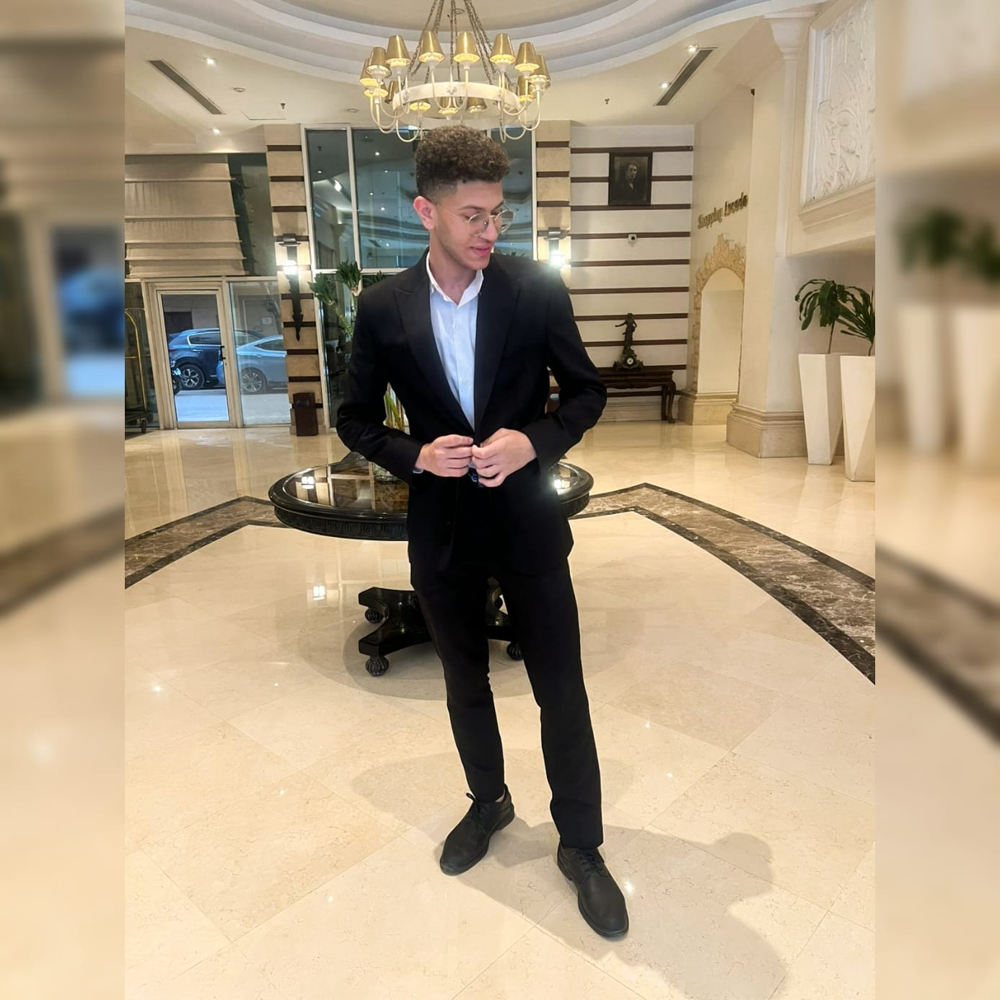

About
About Me
I’m a student who enjoys building simple, polished websites and learning new frontend skills every day, including Tailwind and Bootstrap.
Go to About →I’m a Computer Science student learning frontend development by building modern, responsive, and user-friendly web pages. I’m also improving my skills in Tailwind CSS and Bootstrap to create clean interfaces faster and more professionally.

About
I’m a student who enjoys building simple, polished websites and learning new frontend skills every day, including Tailwind and Bootstrap.
Go to About →Work
I can help with landing pages, portfolio sites, UI improvements, and small frontend projects.
View Services →